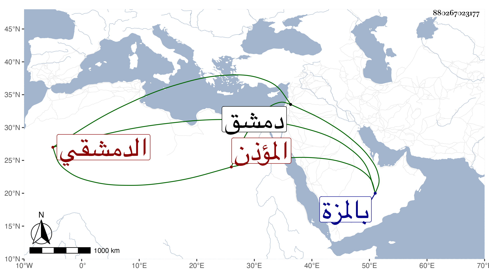

0902Sakhawi.DawLamic.ITO20230111-ara1.EIS1600.880267023177
Biography ID: 880267023177
1070
محمد بن أحمد بن عبد الله ناصر الدين الدمشقي النشنوي المؤذن بجامع المارداني بالمزة ويعرف بابن الحكار . ولد في شعبان سنة إحدى وستين وسبعمائة ، أجاز لي في سنة خمسين من دمشق وزعم البرهان العجلوني أنه سمع على ابن أميلة وكذا قال ابن أبي عذيبة وأنه تأخر إلى بعد الخمسين وليسا بمعتمدين .
